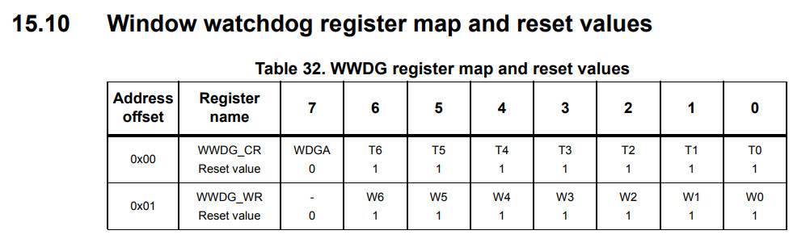
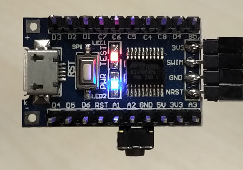

暫存器

.equ PB_ODR, 0x5005
.equ PB_IDR, 0x5006
.equ PB_DDR, 0x5007
.equ PB_CR1, 0x5008
.equ PB_CR2, 0x5009
.equ WWDG_CR, 0x50d1
.equ WWDG_WR, 0x50d2
.area data
.area sseg
.area home
int main
.area cseg
main:
mov PB_DDR, #0x20
mov PB_CR1, #0x20
mov WWDG_CR, #0xff
mov WWDG_WR, #0x7f
loop:
ld a, PB_ODR
xor a, #0x20
ld PB_ODR, a
ldw x, #5000
d0:
decw x
tnzw x
jrne d0
jp loop
觀察LED的變化
